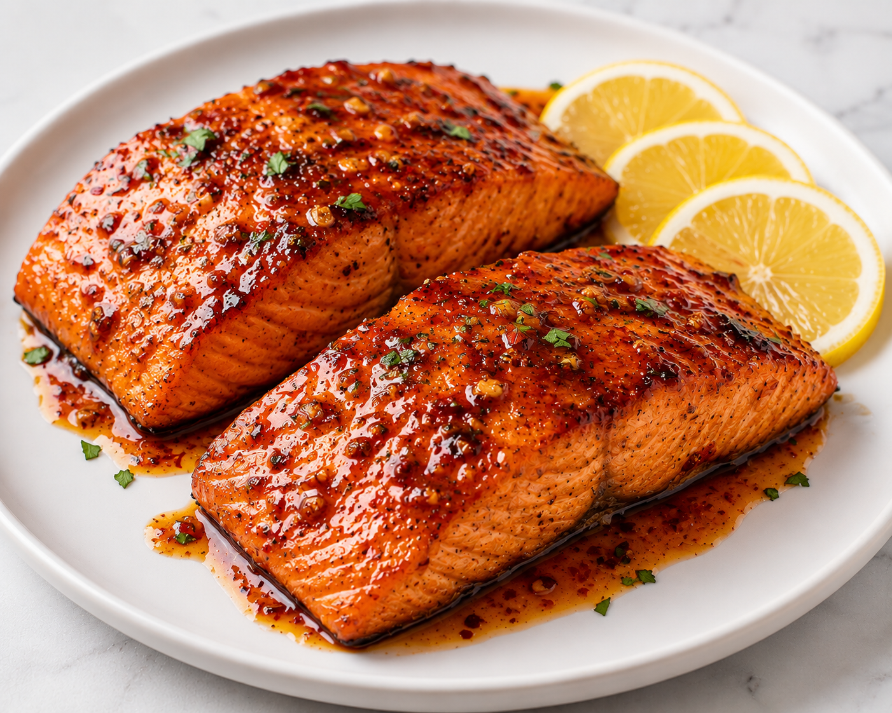

Chef Lee's Recommendation
Spicy Honey Garlic Salmon

Ingredients
- 4 salmon fillets
- 3 tbsp honey
- 3 cloves garlic, minced
- 1 tbsp soy sauce
- 1 tbsp lemon juice
- 1 tsp chili flakes or chili powder
- 1 tbsp cooking oil
- Salt and black pepper, to taste
- Spring onions or sesame seeds for garnish (optional)
Steps
- Season the salmon with salt and black pepper.
-
In a small bowl, mix the honey, garlic, soy sauce, lemon juice, and
chili flakes.
- Heat oil in a pan over medium heat.
-
Cook the salmon for about 3–4 minutes on each side, depending on
thickness.
-
Pour the honey garlic sauce into the pan and let it simmer until it
thickens and coats the salmon.
- Spoon the sauce over the salmon.
-
Garnish with spring onions or sesame seeds and serve immediately.